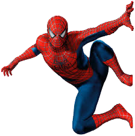

Super Heróis
Superman

Superman ou Super-homem é um super-herói fictício de história em quadrinhos americanas publicado pela DC Comics, uma empresa subsidiária do grupo Time Warner. Superman, entretanto, já foi adaptado para diversos outros meios desde os anos 1930, como cinema, rádio, televisão, literatura e Video game. Superman é um super-herói criado pela dupla de autores de quadrinhos Joe Shuster e Jerry Siegel. Sua primeira aparição foi apresentada na revista Action Comics #1 em 1938, nos Estados Unidos. O personagem nasceu no planeta fictício de Krypton e tinha o nome de Kal-El. Foi mandado à Terra por seu pai, Jor-El, um cientista, momentos antes do planeta explodir. O foguete aterrissou na Terra na cidade de Smallville (por alguns anos, foi traduzida no Brasil como Pequenopolis), onde o jovem Kal-El foi descoberto pelo casal de fazendeiros Jonathan e Martha Kent. Conforme foi crescendo, ele descobriu que tinha habilidades diferentes dos humanos. Quando não está com o tradicional uniforme azul e vermelho, ele vive como Clark Kent, repórter profissional no Planeta Diário
Spider-Man

O Homem-Aranha (Spider-Man no original em inglês) alter-ego de Peter Parker, é um personagem fictício, um super-herói que aparece nas revistas em quadrinhos americanas publicadas pela Marvel Comics, existindo no seu universo partilhado. O Homem-Aranha foi criado pelo editor/escritor Stan Lee e pelo escritor/artista Steve Ditko, e a sua primeira aparição foi no livro de antologia Amazing Fantasy #15 (Agosto de 1962), durante a Era de Prata da banda desenhada. Lee e Ditko conceberam o personagem como um órfão, que foi educado e criado pela sua Tia May e o seu Tio Ben, e, enquanto adolescente, tem de lidar com as lutas diárias normais da sua idade, em adição àquelas que tem como combatente do crime mascarado. Para combater os seus inimigos, os criadores deram-lhe super força e agilidade, a habilidade de conseguir aderir na maior parte das superfícies, a possibilidade de disparar teias de aranha através de mecanismos montados nos pulsos (inventados por ele próprio, a que ele chama "lança-teia" - "web-shooters") e consegue reagir precognitivamente ao perigo com o seu "sentido-aranha" ("spider-sense"). Os seus poderes foram adquiridos após ter sido mordido por uma aranha radioativa.
Batman
Batman é um personagem fictício, um super-herói da banda desenhada americana publicada pela DC Comics. Foi criado pelo escritor Bill Finger e pelo artista Bob Kane, e apareceu pela primeira vez na revista Detective Comics #27 (Maio de 1939). Originalmente com o nome "o Bat-Man", o personagem também é conhecido por vários epítetos como "o Cruzado de Capa" (The Caped Crusader), "o Cavaleiro das Trevas" (The Dark Knight), e "o Maior Detective do Mundo" (The World's Greatest Detective).
A identidade secreta de Batman é Bruce Wayne, um bilionário americano, playboy, magnata de negócios, filantropo e dono da corporação Wayne Enterprises. Depois de testemunhar o assassinato dos seus pais enquanto criança, Wayne jurou vingança contra os criminosos, um juramento moderado por um sentido de justiça. Wayne treina então a si próprio, tanto física como intelectualmente, e cria uma persona inspirada no morcego para combater o crime: Batman